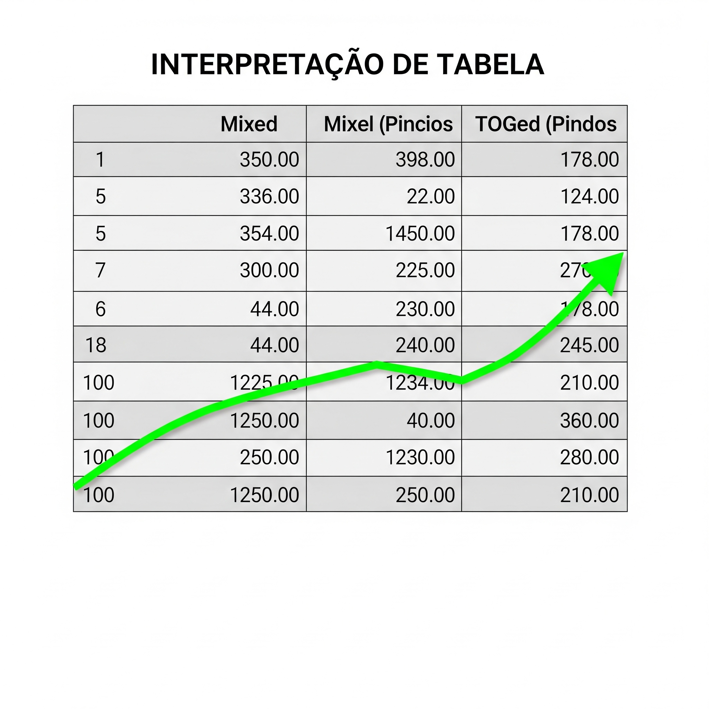

🖼️ Geração de Imagem
Prompt: "Floresta encantada à noite com árvores brilhantes, cogumelos gigantes e lua roxa."

A engenharia de prompt é a habilidade de criar instruções eficazes para que a Inteligência Artificial gere resultados úteis, criativos e precisos.
Prompt: "Escreva uma história infantil com um dragão vegetariano que ensina crianças a cuidarem do meio ambiente."
Resultado: Era uma vez um dragão chamado Verdefogo...
Prompt: "Resuma este artigo sobre mudanças climáticas em 5 frases para alunos do ensino médio."
Resultado: O artigo explica como a poluição aquece a Terra...
Prompt: "Crie um código em Python para uma calculadora simples com menu no terminal."
def calcular():
print("1. Somar\n2. Subtrair\n3. Multiplicar\n4. Dividir")
opcao = int(input("Escolha: "))
a = float(input("Número 1: "))
b = float(input("Número 2: "))
if opcao == 1:
print(a + b)
elif opcao == 2:
print(a - b)
elif opcao == 3:
print(a * b)
elif opcao == 4:
print(a / b)Prompt: "Floresta encantada à noite com árvores brilhantes, cogumelos gigantes e lua roxa."
Prompt: "Analise: 'O produto veio quebrado e ninguém respondeu meu e-mail.'"
Resultado: Sentimento negativo. Motivo: insatisfação não resolvida.
Prompt: "Monte um plano semanal para vestibular com foco em humanas e redação (3h/dia)."
Prompt: "Você é roteirista. Crie um roteiro de podcast para jovens sobre aquecimento global, com piada e música no fim."
Resultado: “Ei, galera! Já ouviram falar no aquecimento global? (...) Vamos salvar o planeta com essa música no ukulele!”
Prompt: "Explique passo a passo como resolver: 'Se João tem o dobro da idade de Ana e a soma das idades é 36, qual a idade de cada um?'"
Resultado: Se João tem o dobro da idade de Ana, então J = 2A. Sabemos que J + A = 36. Substituindo: 2A + A = 36 → 3A = 36 → A = 12 → J = 24.

Prompt: "Você é um professor de história explicando a Revolução Francesa para crianças de 10 anos. Seja divertido e use metáforas."
Resultado: "Imagina que o rei era o dono de um castelo onde só ele comia bolo, enquanto o povo comia migalhas..."
Prompt: "Leia este contrato e destaque os principais riscos jurídicos." (Upload do texto)
Resultado: Riscos encontrados: cláusulas com ambiguidade, ausência de prazos definidos, e penalidades excessivas.
Prompt: "Analise esta tabela de vendas e identifique os meses com queda de faturamento superior a 20%."
Resultado: Em julho e outubro houve quedas superiores a 20%, possivelmente ligadas à sazonalidade ou feriados prolongados.
Prompt: "Leia este artigo em PDF e crie um roteiro de podcast educativo sobre o tema com sugestão de trilha sonora ao fundo."
Resultado: Introdução com pergunta provocativa, explicação dos tópicos com linguagem acessível e finalização com sugestão de música instrumental ambiente estilo lo-fi.
Prompt: "Transforme este texto sobre biodiversidade em uma letra de música pop com rimas e refrão cativante."
Resultado: “Somos parte do planeta, cada ser é uma caneta / Escrevendo a história da vida, numa dança infinita...”